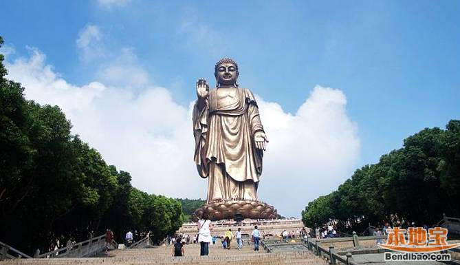
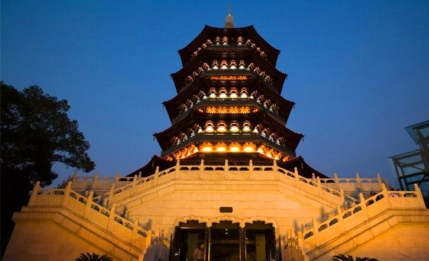
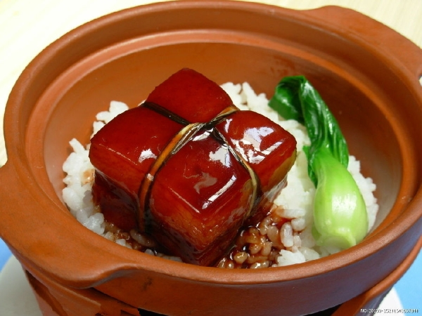
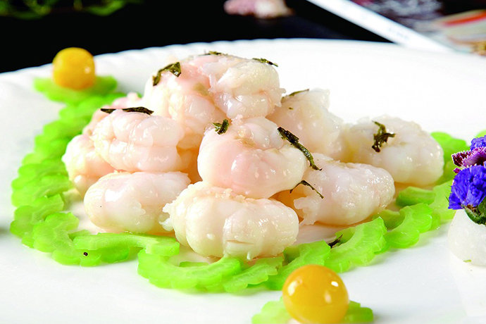
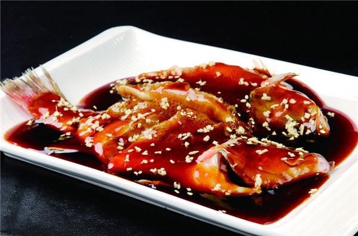

三潭印月
关于杭州

大家印象
杭州是很温和的一个城市，下班时间高峰期会堵车，最常用的交通工具还是公交车，杭州人不会排斥外地人，所以会觉得很舒服，天气的话就是中等偏热一点。我对杭州印象最深的就是，杭州开车的人都会主动给行人让道，很有素质。
走进上海
白居易说"忆江南，最忆是杭州"，一千多年后人们仍然这么认为。如果让世界各地的朋友选择定居中国某个城市，一半以上会选择杭州。西湖的长椅上，苏堤白堤断桥边，每天都在上演一个又一个爱情故事，也许梁山伯与祝英台、许仙和白娘子的爱情传说，使这个城市简直就是爱情和浪漫的代名词。杭州建县于2200多年前的秦代，时称"钱唐"，至隋开皇年间改称杭州。钱塘自古繁华，素有"人间天堂"之誉。唐代中期，杭州发展成"珍异所聚、商贾并辏"的商业大都市。五代吴越和南宋量个朝代均建都杭州，历时200多年，是杭州发展史上的鼎盛时期，号称"东南第一州"。元朝的意大利旅行家马可©波罗把杭州赞为"世界上最美丽华贵的天城"。杭州是中国八大古都之一，浙江省的省会。这里，江流襟带，山色藏幽，湖光翠秀；这里，史脉悠远，文风炽盛，名流辈出；这里，自古至今被公认为是古老神州的东南名都、鱼米之乡 、丝绸之府、文物之邦，一直以物质财富丰饶繁盛和文化艺术源远流长而享有"人间天堂"的美誉。经过2000多年的保护、开发、建设，杭州从一个山中小县，出落成自然环境和人文底蕴相映生辉的国家历史文化名城、著名山水旅游胜地、东南沿海地区现代化的政治经济中心、交通枢纽和文化都会。
最佳季节：品味杭州，无所谓季节，也无所谓天气。西湖如同一位魔术师，无论春夏秋冬、阴晴雨雪，都能幻化出绝美的姿容。 杭州的春天(4-6月)，春风和煦，春水醉人。此时最适合漫步苏堤踏青赏花。 盛夏季节(7-9月)，天气炎热，然而西湖的荷花正在烈日下开得热火朝天。 秋高气爽(10-12月)，满陇桂雨的桂花飘香十里，游人如织。中秋前后，杭州人更是忙碌：白天忙着观钱塘江大潮，晚上忙着游湖赏月。
穿衣指南：严冬(1-3月)时节腊梅竞放，孤山赏梅、灵峰探梅、超山访梅三大赏梅圣地不可不去，西湖十景之一的断桥残雪此时也迎来最动人时节。 以温度来看，1、4、7、10月分别是杭州冬、春、夏、秋四季的分水岭，值得注意的是，1月份最冷，而且是湿冷，所以尤其要多穿些衣服，4月中旬-9月是杭州的雨季，要记得带上雨衣。
建议游玩：2-4天
推荐游览路线
Day1:断桥残雪->宝石流霞->岳庙->苏堤春晓->南屏晚钟
Day2:曲院风荷->灵隐寺->飞来峰->西湖天地
Day3:雷峰夕照->花港观鱼->三潭印月
Day4:西湖->白堤->西泠印社->太子湾->花港观鱼->苏堤→杨公堤
Day5:断桥->长桥->万松书院->雷峰塔->西泠桥与慕才亭->清照亭
杭州钱塘新景游：钱江三桥—滨江新城—萧山经济技术开发区—钱江观潮城—豪华游轮—下沙开发区—珊瑚沙游船码头—之江国家旅游度假区
古都风情文化游：河坊街—鼓楼—南宋皇城遗址—八卦田—南宋官窑博物馆—六和塔
杭州老字号文化游：河坊街—胡庆余堂中药博物馆—胡雪岩故居—鼓楼—南宋官窑博物馆—中国丝绸博物馆
杭州休闲购物游：吴山天风—河坊街—新湖滨商贸旅游特色街—武林路时尚女装街—中国丝绸城
不可错过
---------------必玩景点排行榜---------------
Top 1--->西湖
Top 2--->灵隐寺

Top 3--->雷峰塔

---------------必吃美食排行榜---------------
Top 1--->东坡肉

Top 2--->龙井虾仁

Top 3--->西湖醋鱼
